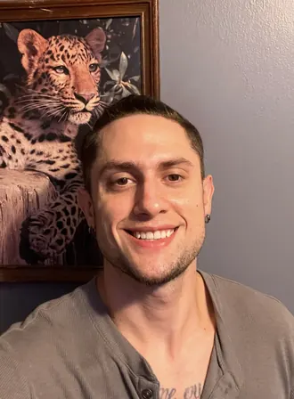

Hey, I'm Daniel Wade Heatherly
Front-End Web Developer
View My WorkAbout Me in Brief
I'm a passionate front-end developer, with a diverse background, who loves building beautiful and responsive websites. I specialize in HTML and CSS, but I am learning new technologies every day, currently improving past basic foundations in JavaScript.
Featured Projects
Other than this portfolio website, here are projects I've completed:
Resume Preview
- Education:Francis Tuttle Technology Center, YouScience, Upskillist, Free Code Camp, Creators Training, & Family Of Faith University.
- Skills:HTML, CSS, Bootstrap, JavaScript, GitHub, Visual Studio Code, WordPress, Elementor, Responsive Web Design, W3C Accessability, Version Control, Digital Citizenship, & Agile Project Management.
- Experience:A complete, working front-end UI used by Electrode Repairs, this portfolio website, a personal gym workout music web application called "Gym Hymns" (in progress), and several small class projects focusing on front-end web development topics.